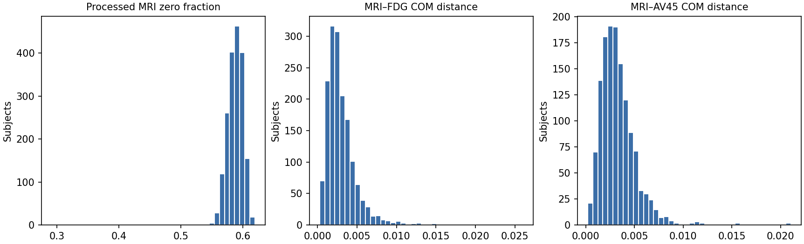
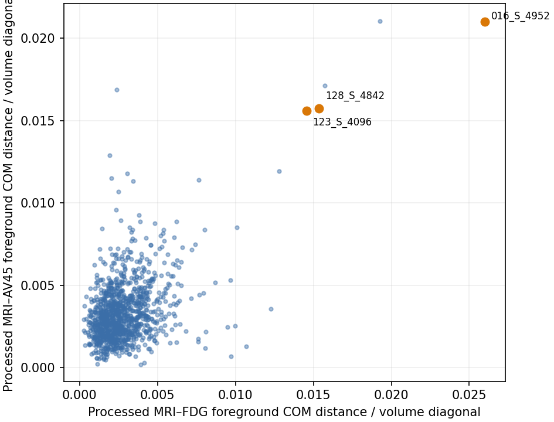

Full/OT 输入影像质量复核
以下图像用于人工检查空间、强度和训练实际输入。该报告不提供最终因果结论，也不依据 PSNR 排除病例。
全队列概况
原始文件三模态 shape 组合数：1；方向组合数：1。训练缓存均按正式 Full manifest 定位，OT 复用同一缓存。


筛查规则
对 18 个源文件/缓存指标分别按全队列 median/MAD 计算 robust |z|。自动候选要求：源文件至少一个指标 robust |z| ≥ 8，且训练缓存至少一个指标 robust |z| ≥ 8；或同一受试者三模态 raw header 的 shape/方向不一致。指标包括零值/前景比例、PET负值比例、边界接触、MRI–PET 前景 Dice 与归一化质心距离。零占位 PET 保留在 cohort 统计，但不参与对应模态的异常评分。
三个指定病例
| PTID | Full/OT 角色 | Full | OT | E1 | 证据阶段 | 自动分数 | 客观标记 | 图像 |
|---|---|---|---|---|---|---|---|---|
016_S_4952 | fold 1 held-out test / fold 2 train | included | included | excluded_by_frozen_E1_QC | raw_and_cache | 49.22 | cache_mri_fdg_dice robust|z|=49.22; raw_mri_zero_fraction robust|z|=46.59; cache_mri_av45_dice robust|z|=46.54; raw_mri_fdg_dice robust|z|=35.77; raw_mri_av45_dice robust|z|=30.37; cache_mri_zero_fraction robust|z|=23.74 | 查看 |
123_S_4096 | fold 1 held-out test / fold 2 train | included | included | included | raw_and_cache | 23.19 | raw_mri_fdg_dice robust|z|=23.19; raw_mri_av45_dice robust|z|=20.69; cache_mri_fdg_dice robust|z|=16.86; cache_mri_av45_dice robust|z|=16.61; raw_mri_fdg_com_distance_norm robust|z|=9.74; raw_mri_av45_com_distance_norm robust|z|=9.29 | 查看 |
128_S_4842 | fold 1 held-out test / fold 2 train | included | included | included | raw_and_cache | 20.88 | raw_mri_fdg_dice robust|z|=20.88; raw_mri_av45_dice robust|z|=17.07; cache_mri_fdg_dice robust|z|=14.82; cache_mri_av45_dice robust|z|=13.78; cache_fdg_zero_fraction robust|z|=10.66; raw_mri_fdg_com_distance_norm robust|z|=10.66 | 查看 |
已有确认记录
| PTID | Full/OT 角色 | Full | OT | E1 | 证据阶段 | 自动分数 | 客观标记 | 图像 |
|---|---|---|---|---|---|---|---|---|
016_S_4952 | fold 1 held-out test / fold 2 train | included | included | excluded_by_frozen_E1_QC | raw_and_cache | 49.22 | cache_mri_fdg_dice robust|z|=49.22; raw_mri_zero_fraction robust|z|=46.59; cache_mri_av45_dice robust|z|=46.54; raw_mri_fdg_dice robust|z|=35.77; raw_mri_av45_dice robust|z|=30.37; cache_mri_zero_fraction robust|z|=23.74 | 查看 |
E1 冻结规则确认排除仅影响 E1 后续 fitting/inference/evaluation；Full/OT 的正式 1857 人训练与 OOF 仍使用原 cohort。E1 收据记录：016_S_4952 曾进入最初 stage-1 adapter（fold 2 训练侧、fold 1 outer test），随后按冻结 QC 规则在 conditions/qc_exclusion_20261017 重拟合，原结果保留。证据阶段 raw_and_cache 表示源文件和训练缓存均达到筛查阈值，因此不是仅在缓存端出现的标记；它本身不等于最终影像学确认。
自动候选病例（需人工复核）
共 7 人。该清单是筛查输出，不是排除清单。
| PTID | Full/OT 角色 | Full | OT | E1 | 证据阶段 | 自动分数 | 客观标记 | 图像 |
|---|---|---|---|---|---|---|---|---|
016_S_4952 | fold 1 held-out test / fold 2 train | included | included | excluded_by_frozen_E1_QC | raw_and_cache | 49.22 | cache_mri_fdg_dice robust|z|=49.22; raw_mri_zero_fraction robust|z|=46.59; cache_mri_av45_dice robust|z|=46.54; raw_mri_fdg_dice robust|z|=35.77; raw_mri_av45_dice robust|z|=30.37; cache_mri_zero_fraction robust|z|=23.74 | 查看 |
012_S_0720 | fold 2 held-out test / fold 1 train | included | included | included | raw_and_cache | 28.29 | cache_mri_fdg_dice robust|z|=28.29; raw_mri_fdg_dice robust|z|=10.48; cache_fdg_zero_fraction robust|z|=9.88 | 查看 |
057_S_2398 | fold 2 held-out test / fold 1 train | included | included | included | raw_and_cache | 23.74 | raw_mri_fdg_dice robust|z|=23.74; raw_mri_av45_dice robust|z|=20.14; cache_mri_fdg_dice robust|z|=15.01; raw_mri_fdg_com_distance_norm robust|z|=14.85; raw_mri_av45_com_distance_norm robust|z|=14.42; cache_mri_av45_dice robust|z|=14.36 | 查看 |
123_S_4096 | fold 1 held-out test / fold 2 train | included | included | included | raw_and_cache | 23.19 | raw_mri_fdg_dice robust|z|=23.19; raw_mri_av45_dice robust|z|=20.69; cache_mri_fdg_dice robust|z|=16.86; cache_mri_av45_dice robust|z|=16.61; raw_mri_fdg_com_distance_norm robust|z|=9.74; raw_mri_av45_com_distance_norm robust|z|=9.29 | 查看 |
128_S_4842 | fold 1 held-out test / fold 2 train | included | included | included | raw_and_cache | 20.88 | raw_mri_fdg_dice robust|z|=20.88; raw_mri_av45_dice robust|z|=17.07; cache_mri_fdg_dice robust|z|=14.82; cache_mri_av45_dice robust|z|=13.78; cache_fdg_zero_fraction robust|z|=10.66; raw_mri_fdg_com_distance_norm robust|z|=10.66 | 查看 |
068_S_0872 | fold 2 held-out test / fold 1 train | included | included | included | raw_and_cache | 13.69 | raw_mri_fdg_dice robust|z|=13.69; raw_mri_av45_dice robust|z|=10.61; cache_mri_fdg_dice robust|z|=8.54 | 查看 |
003_S_0981 | fold 2 held-out test / fold 1 train | included | included | included | raw_and_cache | 9.92 | raw_mri_fdg_com_distance_norm robust|z|=9.92; raw_mri_av45_com_distance_norm robust|z|=9.62; cache_mri_fdg_com_distance_norm robust|z|=9.59; cache_mri_av45_com_distance_norm robust|z|=9.49; raw_mri_fdg_dice robust|z|=9.39; raw_mri_av45_dice robust|z|=8.09 | 查看 |
病例图像
016_S_4952 fold 1 focus
Full/OT 角色：fold 1 held-out test / fold 2 train；Full: included；OT: included；E1: excluded_by_frozen_E1_QC；非零 FDG/AV45：yes/yes；证据阶段：raw_and_cache；自动分数 49.22。
自动标记：cache_mri_fdg_dice robust|z|=49.22; raw_mri_zero_fraction robust|z|=46.59; cache_mri_av45_dice robust|z|=46.54; raw_mri_fdg_dice robust|z|=35.77; raw_mri_av45_dice robust|z|=30.37; cache_mri_zero_fraction robust|z|=23.74


| 模态 | raw shape | raw方向 | raw体素(mm) | raw零值比例 | raw负值比例 | cache零值比例 | cache p1 | cache p50 | cache p99 |
|---|---|---|---|---|---|---|---|---|---|
| MRI | 182x218x182 | LAS | 1x1x1 | 0.3203 | 0.0000 | 0.2916 | 0.0000 | 0.2727 | 0.9859 |
| FDG | 182x218x182 | LAS | 1x1x1 | 0.7124 | 0.0000 | 0.5991 | 0.0000 | 0.0000 | 0.8312 |
| AV45 | 182x218x182 | LAS | 1x1x1 | 0.7082 | 0.0000 | 0.5940 | 0.0000 | 0.0000 | 0.8328 |
数据路径
| MRI raw | /home/data/liutuo/code/liutuo_data/ADNI1234_mri_fdg_av45/mri_strip_registered/016_S_4952_MRI_registered.nii.gz |
|---|---|
| FDG raw | /home/data/liutuo/code/liutuo_data/ADNI1234_mri_fdg_av45/PET2_FDG_strip_registered/016_S_4952_FDG_registered.nii.gz |
| AV45 raw | /home/data/liutuo/code/liutuo_data/ADNI1234_mri_fdg_av45/PET1_AV45_strip_registered/016_S_4952_AV45_registered.nii.gz |
| 训练缓存 | /mnt/nfsdata/nfsdata/linshuijin/DIRECTPP/results/cache/original_author_reproduction/v1_3f362cdb3ebe8a94_bbcd413100d8ece3_nfs_backup/2a19fcd0e9c23213c74027ba9db6ea8b.pt |
123_S_4096 fold 1 focus
Full/OT 角色：fold 1 held-out test / fold 2 train；Full: included；OT: included；E1: included；非零 FDG/AV45：yes/yes；证据阶段：raw_and_cache；自动分数 23.19。
自动标记：raw_mri_fdg_dice robust|z|=23.19; raw_mri_av45_dice robust|z|=20.69; cache_mri_fdg_dice robust|z|=16.86; cache_mri_av45_dice robust|z|=16.61; raw_mri_fdg_com_distance_norm robust|z|=9.74; raw_mri_av45_com_distance_norm robust|z|=9.29


| 模态 | raw shape | raw方向 | raw体素(mm) | raw零值比例 | raw负值比例 | cache零值比例 | cache p1 | cache p50 | cache p99 |
|---|---|---|---|---|---|---|---|---|---|
| MRI | 182x218x182 | LAS | 1x1x1 | 0.7212 | 0.0000 | 0.5865 | 0.0000 | 0.0000 | 0.9773 |
| FDG | 182x218x182 | LAS | 1x1x1 | 0.7244 | 0.0000 | 0.5896 | 0.0000 | 0.0000 | 0.6850 |
| AV45 | 182x218x182 | LAS | 1x1x1 | 0.7331 | 0.0000 | 0.6020 | 0.0000 | 0.0000 | 0.8147 |
数据路径
| MRI raw | /home/data/liutuo/code/liutuo_data/ADNI1234_mri_fdg_av45/mri_strip_registered/123_S_4096_MRI_registered.nii.gz |
|---|---|
| FDG raw | /home/data/liutuo/code/liutuo_data/ADNI1234_mri_fdg_av45/PET2_FDG_strip_registered/123_S_4096_FDG_registered.nii.gz |
| AV45 raw | /home/data/liutuo/code/liutuo_data/ADNI1234_mri_fdg_av45/PET1_AV45_strip_registered/123_S_4096_AV45_registered.nii.gz |
| 训练缓存 | /mnt/nfsdata/nfsdata/linshuijin/DIRECTPP/results/cache/original_author_reproduction/v1_3f362cdb3ebe8a94_bbcd413100d8ece3_nfs_backup/e7790cbd29dfc0556783bca9bd809523.pt |
128_S_4842 fold 1 focus
Full/OT 角色：fold 1 held-out test / fold 2 train；Full: included；OT: included；E1: included；非零 FDG/AV45：yes/yes；证据阶段：raw_and_cache；自动分数 20.88。
自动标记：raw_mri_fdg_dice robust|z|=20.88; raw_mri_av45_dice robust|z|=17.07; cache_mri_fdg_dice robust|z|=14.82; cache_mri_av45_dice robust|z|=13.78; cache_fdg_zero_fraction robust|z|=10.66; raw_mri_fdg_com_distance_norm robust|z|=10.66


| 模态 | raw shape | raw方向 | raw体素(mm) | raw零值比例 | raw负值比例 | cache零值比例 | cache p1 | cache p50 | cache p99 |
|---|---|---|---|---|---|---|---|---|---|
| MRI | 182x218x182 | LAS | 1x1x1 | 0.7123 | 0.0000 | 0.5739 | 0.0000 | 0.0000 | 0.9790 |
| FDG | 182x218x182 | LAS | 1x1x1 | 0.0000 | 0.7169 | 0.4799 | 0.0000 | 0.0003 | 0.7394 |
| AV45 | 182x218x182 | LAS | 1x1x1 | 0.0000 | 0.7081 | 0.4672 | 0.0000 | 0.0004 | 0.8347 |
数据路径
| MRI raw | /home/data/liutuo/code/liutuo_data/ADNI1234_mri_fdg_av45/mri_strip_registered/128_S_4842_MRI_registered.nii.gz |
|---|---|
| FDG raw | /home/data/liutuo/code/liutuo_data/ADNI1234_mri_fdg_av45/PET2_FDG_strip_registered/128_S_4842_FDG_registered.nii.gz |
| AV45 raw | /home/data/liutuo/code/liutuo_data/ADNI1234_mri_fdg_av45/PET1_AV45_strip_registered/128_S_4842_AV45_registered.nii.gz |
| 训练缓存 | /mnt/nfsdata/nfsdata/linshuijin/DIRECTPP/results/cache/original_author_reproduction/v1_3f362cdb3ebe8a94_bbcd413100d8ece3_nfs_backup/8ec57b769eb64c42ab17b744bc46f5be.pt |
012_S_0720 fold 2 automatic_candidate
Full/OT 角色：fold 2 held-out test / fold 1 train；Full: included；OT: included；E1: included；非零 FDG/AV45：yes/no；证据阶段：raw_and_cache；自动分数 28.29。
自动标记：cache_mri_fdg_dice robust|z|=28.29; raw_mri_fdg_dice robust|z|=10.48; cache_fdg_zero_fraction robust|z|=9.88


| 模态 | raw shape | raw方向 | raw体素(mm) | raw零值比例 | raw负值比例 | cache零值比例 | cache p1 | cache p50 | cache p99 |
|---|---|---|---|---|---|---|---|---|---|
| MRI | 182x218x182 | LAS | 1x1x1 | 0.7207 | 0.0000 | 0.5837 | 0.0000 | 0.0000 | 0.9779 |
| FDG | 182x218x182 | LAS | 1x1x1 | 0.0000 | 0.7341 | 0.4877 | 0.0000 | 0.0678 | 0.8302 |
| AV45 | 182x218x182 | LAS | 1x1x1 | 1.0000 | — | — | 0.0000 | 0.0000 | 0.0000 |
数据路径
| MRI raw | /home/data/liutuo/code/liutuo_data/ADNI1234_mri_fdg_av45/mri_strip_registered/012_S_0720_MRI_registered.nii.gz |
|---|---|
| FDG raw | /home/data/liutuo/code/liutuo_data/ADNI1234_mri_fdg_av45/PET2_FDG_strip_registered/012_S_0720_FDG_registered.nii.gz |
| AV45 raw | /home/data/liutuo/code/liutuo_data/ADNI1234_mri_fdg_av45/PET1_AV45_strip_registered/012_S_0720_zero.nii.gz |
| 训练缓存 | /mnt/nfsdata/nfsdata/linshuijin/DIRECTPP/results/cache/original_author_reproduction/v1_3f362cdb3ebe8a94_bbcd413100d8ece3_nfs_backup/ffbc2d22d814b9ca102ea0eacf5a5619.pt |
057_S_2398 fold 2 automatic_candidate
Full/OT 角色：fold 2 held-out test / fold 1 train；Full: included；OT: included；E1: included；非零 FDG/AV45：yes/yes；证据阶段：raw_and_cache；自动分数 23.74。
自动标记：raw_mri_fdg_dice robust|z|=23.74; raw_mri_av45_dice robust|z|=20.14; cache_mri_fdg_dice robust|z|=15.01; raw_mri_fdg_com_distance_norm robust|z|=14.85; raw_mri_av45_com_distance_norm robust|z|=14.42; cache_mri_av45_dice robust|z|=14.36


| 模态 | raw shape | raw方向 | raw体素(mm) | raw零值比例 | raw负值比例 | cache零值比例 | cache p1 | cache p50 | cache p99 |
|---|---|---|---|---|---|---|---|---|---|
| MRI | 182x218x182 | LAS | 1x1x1 | 0.6889 | 0.0000 | 0.5470 | 0.0000 | 0.0000 | 0.9792 |
| FDG | 182x218x182 | LAS | 1x1x1 | 0.7215 | 0.0000 | 0.5846 | 0.0000 | 0.0000 | 0.6938 |
| AV45 | 182x218x182 | LAS | 1x1x1 | 0.7232 | 0.0000 | 0.5869 | 0.0000 | 0.0000 | 0.8563 |
数据路径
| MRI raw | /home/data/liutuo/code/liutuo_data/ADNI1234_mri_fdg_av45/mri_strip_registered/057_S_2398_MRI_registered.nii.gz |
|---|---|
| FDG raw | /home/data/liutuo/code/liutuo_data/ADNI1234_mri_fdg_av45/PET2_FDG_strip_registered/057_S_2398_FDG_registered.nii.gz |
| AV45 raw | /home/data/liutuo/code/liutuo_data/ADNI1234_mri_fdg_av45/PET1_AV45_strip_registered/057_S_2398_AV45_registered.nii.gz |
| 训练缓存 | /mnt/nfsdata/nfsdata/linshuijin/DIRECTPP/results/cache/original_author_reproduction/v1_3f362cdb3ebe8a94_bbcd413100d8ece3_nfs_backup/5cfefb94d7ccaffa735661c85ae5706d.pt |
068_S_0872 fold 2 automatic_candidate
Full/OT 角色：fold 2 held-out test / fold 1 train；Full: included；OT: included；E1: included；非零 FDG/AV45：yes/yes；证据阶段：raw_and_cache；自动分数 13.69。
自动标记：raw_mri_fdg_dice robust|z|=13.69; raw_mri_av45_dice robust|z|=10.61; cache_mri_fdg_dice robust|z|=8.54


| 模态 | raw shape | raw方向 | raw体素(mm) | raw零值比例 | raw负值比例 | cache零值比例 | cache p1 | cache p50 | cache p99 |
|---|---|---|---|---|---|---|---|---|---|
| MRI | 182x218x182 | LAS | 1x1x1 | 0.7035 | 0.0000 | 0.5591 | 0.0000 | 0.0000 | 0.9799 |
| FDG | 182x218x182 | LAS | 1x1x1 | 0.7281 | 0.0000 | 0.5946 | 0.0000 | 0.0000 | 0.7661 |
| AV45 | 182x218x182 | LAS | 1x1x1 | 0.7178 | 0.0000 | 0.5797 | 0.0000 | 0.0000 | 0.8706 |
数据路径
| MRI raw | /home/data/liutuo/code/liutuo_data/ADNI1234_mri_fdg_av45/mri_strip_registered/068_S_0872_MRI_registered.nii.gz |
|---|---|
| FDG raw | /home/data/liutuo/code/liutuo_data/ADNI1234_mri_fdg_av45/PET2_FDG_strip_registered/068_S_0872_FDG_registered.nii.gz |
| AV45 raw | /home/data/liutuo/code/liutuo_data/ADNI1234_mri_fdg_av45/PET1_AV45_strip_registered/068_S_0872_AV45_registered.nii.gz |
| 训练缓存 | /mnt/nfsdata/nfsdata/linshuijin/DIRECTPP/results/cache/original_author_reproduction/v1_3f362cdb3ebe8a94_bbcd413100d8ece3_nfs_backup/9f85f504cbb8fccdb4de7c9a7b8c552b.pt |
003_S_0981 fold 2 automatic_candidate
Full/OT 角色：fold 2 held-out test / fold 1 train；Full: included；OT: included；E1: included；非零 FDG/AV45：yes/yes；证据阶段：raw_and_cache；自动分数 9.92。
自动标记：raw_mri_fdg_com_distance_norm robust|z|=9.92; raw_mri_av45_com_distance_norm robust|z|=9.62; cache_mri_fdg_com_distance_norm robust|z|=9.59; cache_mri_av45_com_distance_norm robust|z|=9.49; raw_mri_fdg_dice robust|z|=9.39; raw_mri_av45_dice robust|z|=8.09


| 模态 | raw shape | raw方向 | raw体素(mm) | raw零值比例 | raw负值比例 | cache零值比例 | cache p1 | cache p50 | cache p99 |
|---|---|---|---|---|---|---|---|---|---|
| MRI | 182x218x182 | LAS | 1x1x1 | 0.7241 | 0.0000 | 0.5903 | 0.0000 | 0.0000 | 0.9780 |
| FDG | 182x218x182 | LAS | 1x1x1 | 0.7210 | 0.0000 | 0.5847 | 0.0000 | 0.0000 | 0.7578 |
| AV45 | 182x218x182 | LAS | 1x1x1 | 0.7264 | 0.0000 | 0.5927 | 0.0000 | 0.0000 | 0.8281 |
数据路径
| MRI raw | /home/data/liutuo/code/liutuo_data/ADNI1234_mri_fdg_av45/mri_strip_registered/003_S_0981_MRI_registered.nii.gz |
|---|---|
| FDG raw | /home/data/liutuo/code/liutuo_data/ADNI1234_mri_fdg_av45/PET2_FDG_strip_registered/003_S_0981_FDG_registered.nii.gz |
| AV45 raw | /home/data/liutuo/code/liutuo_data/ADNI1234_mri_fdg_av45/PET1_AV45_strip_registered/003_S_0981_AV45_registered.nii.gz |
| 训练缓存 | /mnt/nfsdata/nfsdata/linshuijin/DIRECTPP/results/cache/original_author_reproduction/v1_3f362cdb3ebe8a94_bbcd413100d8ece3_nfs_backup/e615b68750efcf8fa1d9d75ceb716db6.pt |
来源与限制
- Full 配置与清单：
/mnt/nfsdata/nfsdata/linshuijin/DIRECTPP/reports/original_author_reproduction_20261020/cohort.json、/mnt/nfsdata/nfsdata/linshuijin/DIRECTPP/reports/original_author_reproduction_20261020/split_manifest.csv、/mnt/nfsdata/nfsdata/linshuijin/DIRECTPP/reports/original_author_reproduction_20261020/input_hashes.csv - Full/OT 共享缓存：
/mnt/nfsdata/nfsdata/linshuijin/DIRECTPP/results/cache/original_author_reproduction/v1_3f362cdb3ebe8a94_bbcd413100d8ece3_nfs_backup - OT 当前报告、provenance 与执行代码记录其复制并静态校验 Full cohort/split/input manifest，且复用上述缓存；当前 OT assets 挂载路径下未找到第二份 manifest 文件，因此本次未再次对 OT 独立副本做现文件哈希比较。
- E1 冻结排除记录：
/mnt/nfsdata/nfsdata/linshuijin/DIRECTPP/reports/e1_stage01_20261017/qc_exclusions.json - 原始三模态文件可在训练节点读取；本报告未修改源文件、缓存、split 或实验结果。
- 自动筛查不能替代逐病例医学影像复核；未达到阈值不等于已证明无问题。